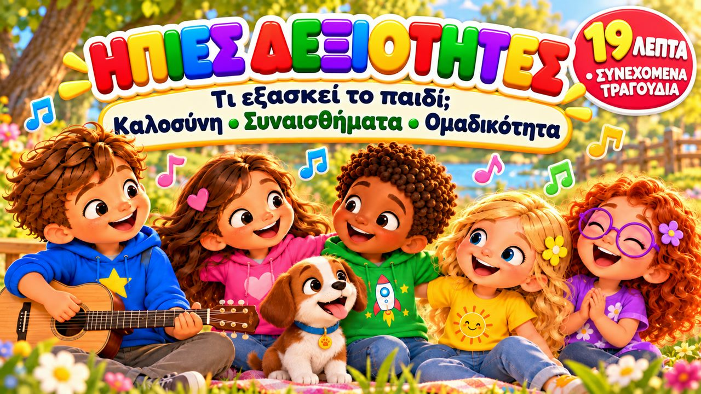

19 Λεπτά Παιδικά Τραγούδια 🎵 Καλοσύνη, Συναισθήματα, Ενσυναίσθηση, Ομαδικότητα & Ακρόαση
Συνεχόμενα τραγούδια με στίχους. Παρακάτω βρίσκετε δωρεάν δραστηριότητες, ζωγραφιές και κουίζ για κάθε τραγούδι.

▶Συνεχόμενα τραγούδια με στίχους. Παρακάτω βρίσκετε δωρεάν δραστηριότητες, ζωγραφιές και κουίζ για κάθε τραγούδι.

▶